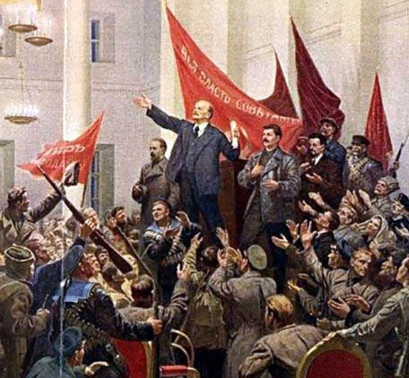

LIGHTING THE FIRE
There were a multitude of events that were responsible for the October Revolution, and the Russian Civil War.
First of all, the February Revolution (which took place in March funnily) resulted in the abdication of Tsar Nicholas II due to major discontent in the Russian population. He transferred authority to his brother - Grand Duke Michael Alexandrovich - who refused to take the throne. Because of this, over 300 years of Romanov rule suddenly came to an end, creating a power vacuum which would be fought over by government loyalists and revolutionaries. The Tsar's abdication was a victory for the revolutionaries, as there was no real government presence left to stop them. Because of this, revolutionary fervor grew, resulting in the October Revolution and the eventual seizure of the government by Bolshevik forces.
As the new revolutionary government under the Bolsheviks rose up and began taking over as the seemingly new government in Russia, there were many who did not approve of their revolutionary reforms. Many, especially high-ranking members of Russian society such as nobles and government officials, saw these reforms as dangerous to their way of life. Reforms such as land redistribution and more rights/labor protections for the workers were dangerous for the higher classes, and so this created political instability for the new up-and-coming Bolshevik government.
However, the anti-revolutionary White Russia government was also facing instability. Foreign meddling such as the Czechoslovak Legion in Siberia and the British invasions of the south and north created fractured White forces. Alongside this, there were a multitude of different ideologies and representive groups in the White movement, from republicans, to monarchists, to fascists, which also created a more fractured White movement and extraordinary political instability.